Dipple is a display font I drew from scratch, and the page I built to show it off. I saw a brand film with round, chunky lettering that looked like it was made from clay, and I wanted a face like that of my own.
Most free fonts in this space are either perfectly smooth or messy on purpose. My bet was in between: letters that lean forward like they’re in a hurry, with blobby ends and edges that look inked by hand, but still clean enough to set a headline in.
Then the page. A font is easy to scroll past on a specimen sheet, so I gave it a world to live in instead.
Scroll through it yourself.
The whole page is live, music and all. The font is free to download at the end.
I didn’t draw outlines. Every letter starts as a single centre line, like a pen path, and a script inflates it into a round stroke, adds a soft blob to each end, and leans the whole thing forward seven degrees.
That one decision kept the family honest. Change the thickness once and all 90-odd characters stay in step, which meant I could tune the weight across the whole alphabet in minutes instead of redrawing it.
It comes in two styles. Smooth is the clean one. Rough runs a little ink noise along every edge, and it swaps in a slightly different version when a letter repeats, so a double “l” or “p” never looks stamped.
abcdefghijklmnopqrstuvwxyz
0123456789 !?&@$%*+=()“”’ ★ ✦
Capitals, lowercase, numbers, the punctuation you actually use, curly quotes, and six little stars that only Dipple has. Hover any one to see it up close.
Rough also carries 53 alternates, so when a letter repeats in a word, the second one is drawn a little differently.
too heavyThe first version was chunkier. It looked great as one big word, but the holes in the e and s closed up in a sentence. I took the weight down about ten percent and opened them back up.
too plainIts working name was Pebble. It described the shape but not the feeling. Dipple sounds like the letters look: round, a bit silly, and impossible to say seriously.
The font is soft and handmade, so the world had to be too. I generated six takes on an alien landscape and picked two: the patterned clay hills and fuzzy plants from one, and the clouds hanging on strings from another.
The rule I held to was mixed media you could almost touch. Paper hills with dots and stripes, clay flowers, a watercolour sky, a moon that looks like a cookie. Nothing glossy, nothing 3D-rendered, nothing that looks like a stock illustration.
The colours come straight from that world: a goop red, a crab yellow, one deep blue for the water, and cream and ink for the type. The letters are always flat, with no shadow, so the font stays the cleanest thing on the screen.
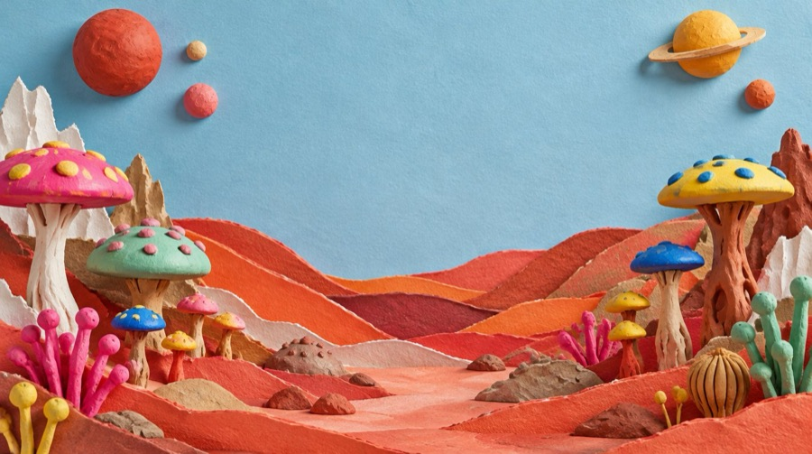
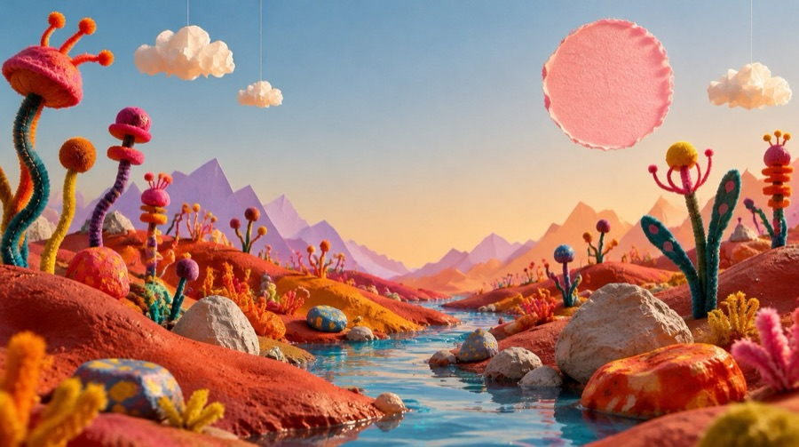
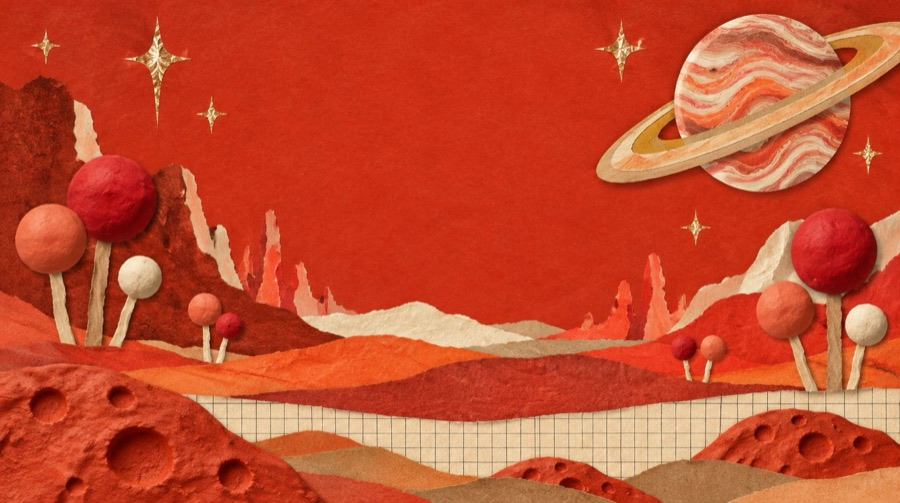
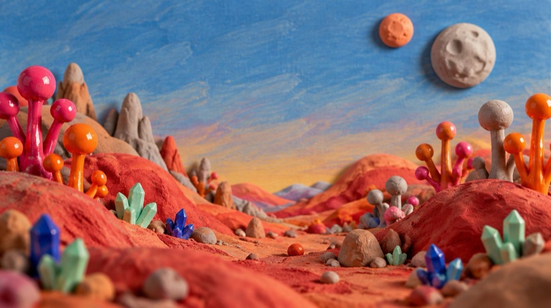
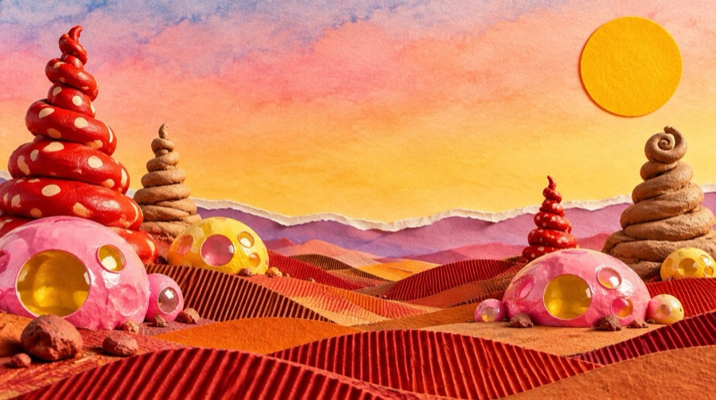
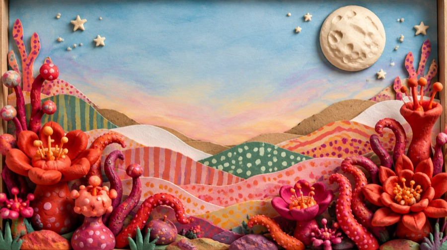
Six first takes. I picked the clay hills and plants of the last one and the clouds on strings of the second.
muddyThe first title had a soft drop shadow to lift it off the world. It made the letters look stuck on. Flat letters read cleaner, and let the clay be the only thing with depth.
Everything on the page comes from one small kit, so every scene feels like the same world.
Seven hand-inked stars, each in six colours and each with its own little animation. Hand-inked bubbles that rise alone or in clusters, and pop when they reach the top or when you click them. A clay crab cut into six pieces, shell, eyes, two claws and two sets of legs, so each part can move on its own. And the world itself, built as separate layers that rise up as you scroll.
Stars
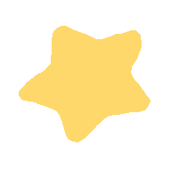
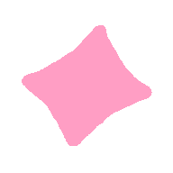
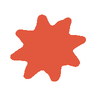
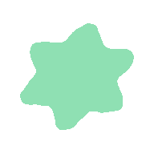
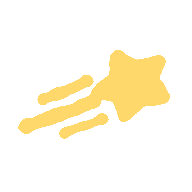
The crab
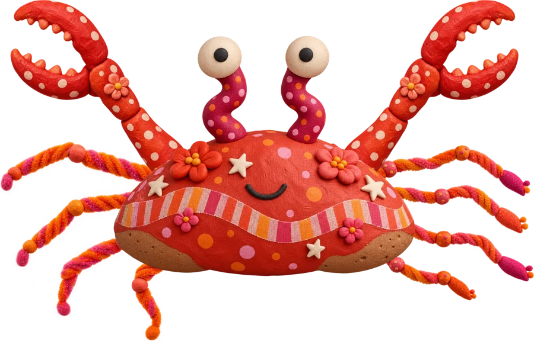
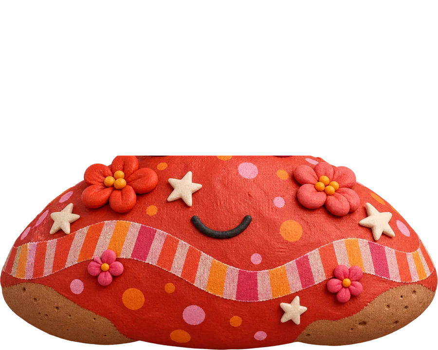
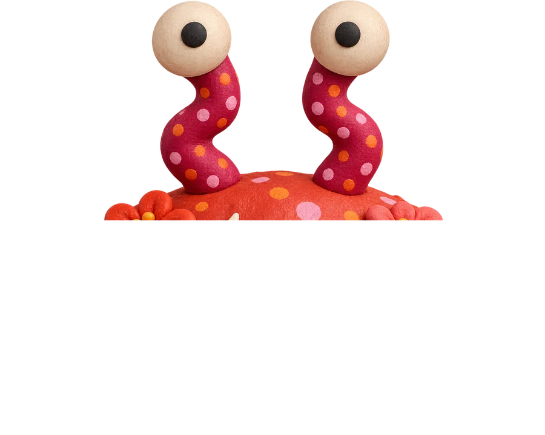
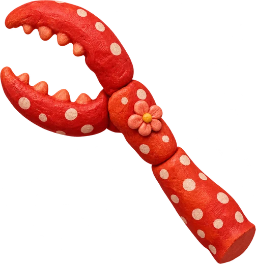

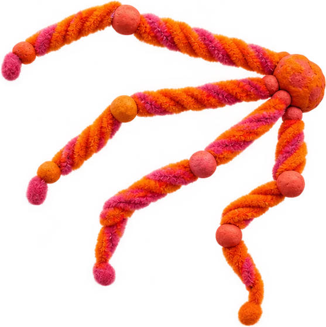

Six clay parts, so each claw and set of legs can move on its own.
Bubbles
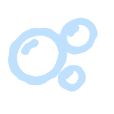
Interface
The world, in pieces


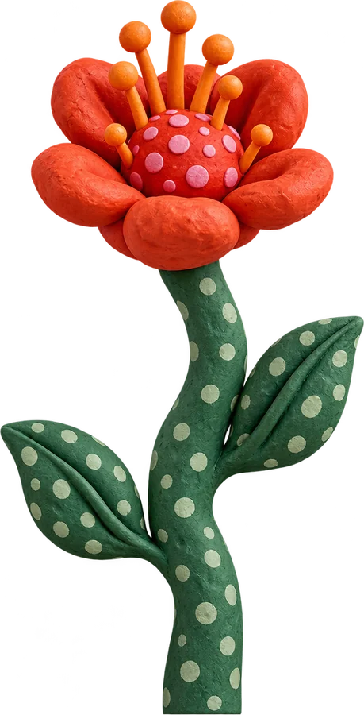

The world builds itself
Each layer pops up as you scroll, then the name lands on top.
The alphabet on a wheel
One slow turn carries every letter across, biggest in the middle.
Pulled into the page
The camera pushes in and the whole set arrives at once.
The crab builds the name
Each claw reaches for a letter and pulls it home.
Download Dipple today
The water rises, the crab floats away, and the button pops in last.
it made me dizzyThe letters first hopped across the screen one at a time. Big was right, but that much fast motion made me dizzy. Putting them on one slow wheel kept the size and lost the dizziness.
too softThe download headline used to fade in. It felt like every other website. Now each letter pops in on its own, like a sticker being pressed down.
no entranceIn the crab scene the letters were simply waiting when the yellow arrived. Now they tumble in from the edges first, so the crab has something to catch.
I wrote a brief for a short instrumental, bouncy and curious, made of soft blips, bubble pops and rubber-band boings, and generated it with ElevenLabs. It’s called Tiny Planet Playroom.
The player is a single Dipple star in the corner. It never plays on its own. When you press it, the volume eases in, and the star pulses and spins to the beat. I tried a little paper cassette with dancing sound lines first, but the star felt more like the rest of the page.
Tiny Planet Playroom
Press the star to play it here.
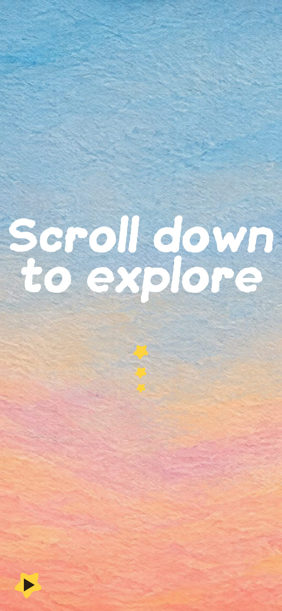
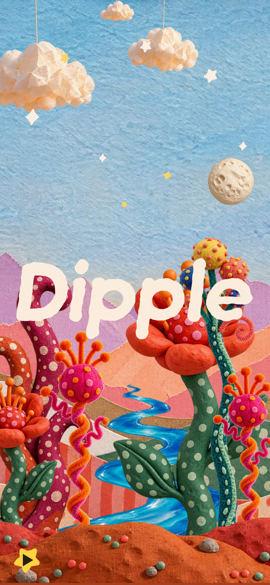
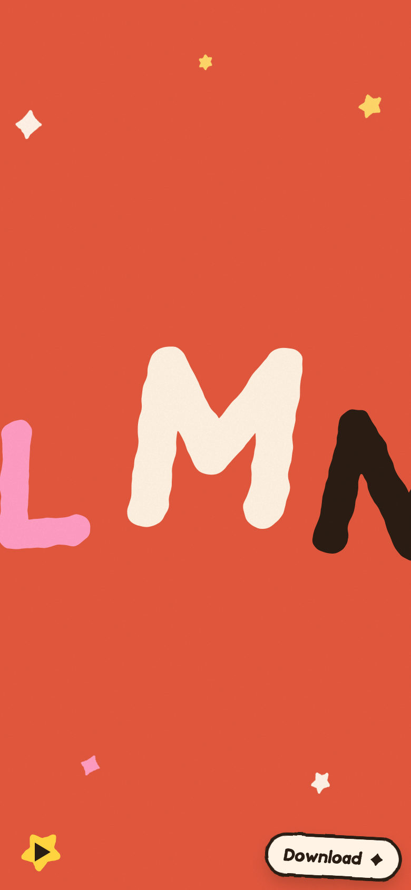
The same world, held in one hand.
On a phone the world grows to fill the tall screen and the letters stay huge.
The player and the Download pill shrink and tuck into the corners, out of the way of your thumb.
Drawn, coded and directed by me, with Claude in the loop. No font editor, no templates.
 Claude CodeBuilding the font and the page with me
Claude CodeBuilding the font and the page with me FigmaSketching the letters and laying out the scenes
FigmaSketching the letters and laying out the scenes PythonDrawing and inflating every letter
PythonDrawing and inflating every letter JavaScriptThe scroll story, the wheel, the crab and the player
JavaScriptThe scroll story, the wheel, the crab and the player HiggsfieldThe clay world, the crab and the stickers
HiggsfieldThe clay world, the crab and the stickers ElevenLabsThe song
ElevenLabsThe songTake Dipple home.
Both styles, free, ready for Figma, Keynote or the web.